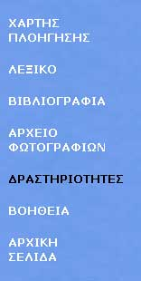
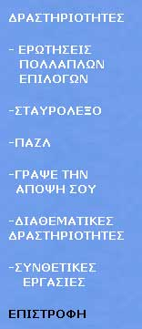

| Εγχειρίδιο Χρήσης |
3.2 Κάθετο MenuΣτο κάθετο menu κάθε ενότητας εμφανίζονται τα εργαλεία και οι μαθητικές δραστηριότητες. Το περιεχόμενο των εργαλείων και των δραστηριοτήτων αλλάζει ανάλογα με την ενότητα. Κάνοντας κλικ στη λέξη «Δραστηριότητες» μπορείτε να μεταφερθείτε στην οθόνη των δραστηριοτήτων. Πατώντας τη λέξη «Επιστροφή» επανέρχεται η αρχική οθόνη του κάθετου menu .  Εικόνα 3.2.1 Κάθετο menu - εργαλεία  Εικόνα 3.2.2 Κάθετο menu - δραστηριότητες Θα αναφερθούμε αναλυτικότερα στα εργαλεία και τις δραστηριότητες στα κεφάλαια 5 και 6 αντίστοιχα. |